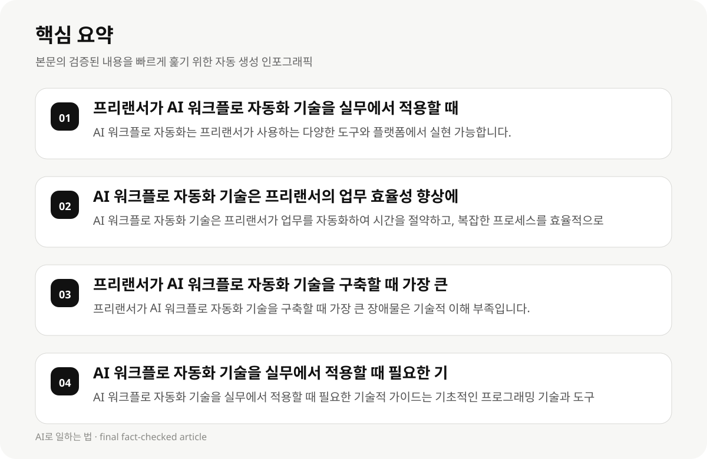

프리랜서가 AI 워크플로 자동화 기술을 실무에서 적용할 때 가장 중요한 요소는 무엇인가요? #
프리랜서가 AI 워크플로 자동화 기술을 실무에서 적용할 때 가장 중요한 요소는 기술적 이해입니다. AI 워크플로 자동화는 복잡한 프로세스를 자동화하여 업무 효율성을 높이지만, 이 기술을 효과적으로 적용하기 위해서는 프리랜서가 기초적인 기술을 이해하고, 도구를 활용할 수 있어야 합니다.
AI 워크플로 자동화는 프리랜서가 사용하는 다양한 도구와 플랫폼에서 실현 가능합니다. 예를 들어, Zoho Flow와 GitHub의 libretto, seer 엔지니어링 툴은 프리랜서가 복잡한 워크플로를 안정적으로 구축할 수 있도록 도와줍니다. 그러나 이 도구들을 효과적으로 사용하기 위해서는 프리랜서가 기초적인 프로그래밍 기술과 워크플로 자동화의 개념을 이해해야 합니다.
- AI 워크플로 자동화는 프리랜서가 사용하는 다양한 도구와 플랫폼에서 실현 가능합니다.
- 프리랜서가 AI 워크플로 자동화 기술을 효과적으로 적용하기 위해서는 기초적인 기술 이해가 필요합니다.
- Zoho Flow와 GitHub의 libretto, seer 엔지니어링 툴은 프리랜서가 복잡한 워크플로를 안정적으로 구축할 수 있도록 도와줍니다.
AI 워크플로 자동화 기술은 프리랜서의 업무 효율성 향상에 어떻게 기여할 수 있나요? #
AI 워크플로 자동화 기술은 프리랜서가 업무를 자동화하여 시간을 절약하고, 복잡한 프로세스를 효율적으로 처리할 수 있도록 도와줍니다. 예를 들어, GitHub의 libretto는 프리랜서가 웹 기반의 자동화 프로세스를 구축할 수 있도록 도와줍니다. 이 기술은 프리랜서가 업무를 자동화하여 시간을 절약하고, 업무의 정확도를 높일 수 있도록 도와줍니다.
AI 워크플로 자동화 기술은 프리랜서가 복잡한 프로젝트를 관리하고, 여러 도구를 조합하여 업무를 효율적으로 처리할 수 있도록 도와줍니다. 이 기술은 프리랜서가 업무의 복잡성을 줄이고, 업무의 효율성을 높일 수 있도록 도와줍니다.
- AI 워크플로 자동화 기술은 프리랜서가 업무를 자동화하여 시간을 절약하고, 복잡한 프로세스를 효율적으로 처리할 수 있도록 도와줍니다.
- GitHub의 libretto는 프리랜서가 웹 기반의 자동화 프로세스를 구축할 수 있도록 도와줍니다.
- AI 워크플로 자동화 기술은 프리랜서가 복잡한 프로젝트를 관리하고, 여러 도구를 조합하여 업무를 효율적으로 처리할 수 있도록 도와줍니다.
프리랜서가 AI 워크플로 자동화 기술을 구축할 때 가장 큰 장애물은 무엇인가요? #
프리랜서가 AI 워크플로 자동화 기술을 구축할 때 가장 큰 장애물은 기술적 이해 부족입니다. AI 워크플로 자동화는 복잡한 프로세스를 자동화하여 업무 효율성을 높이지만, 이 기술을 효과적으로 적용하기 위해서는 프리랜서가 기초적인 기술을 이해하고, 도구를 활용할 수 있어야 합니다.
프리랜서가 AI 워크플로 자동화 기술을 구축할 때 가장 큰 장애물은 시간과 자원의 부족입니다. AI 워크플로 자동화 기술은 복잡한 프로세스를 자동화하기 위해 많은 시간과 자원이 필요합니다. 따라서 프리랜서는 시간과 자원을 효율적으로 관리해야 합니다.
- 프리랜서가 AI 워크플로 자동화 기술을 구축할 때 가장 큰 장애물은 기술적 이해 부족입니다.
- AI 워크플로 자동화 기술은 복잡한 프로세스를 자동화하기 위해 많은 시간과 자원이 필요합니다.
- 프리랜서는 시간과 자원을 효율적으로 관리해야 합니다.

AI 워크플로 자동화 기술을 실무에서 적용할 때 필요한 기술적 가이드는 무엇인가요? #
AI 워크플로 자동화 기술을 실무에서 적용할 때 필요한 기술적 가이드는 다음과 같습니다: 첫째, 프리랜서가 AI 워크플로 자동화 기술을 이해하고, 기초적인 프로그래밍 기술을 습득해야 합니다. 둘째, 프리랜서는 다양한 도구와 플랫폼을 활용하여 AI 워크플로 자동화 기술을 구축해야 합니다. 셋째, 프리랜서는 AI 워크플로 자동화 기술을 적용하면서 업무의 복잡성을 줄이고, 효율성을 높일 수 있도록 관리해야 합니다.
- AI 워크플로 자동화 기술을 실무에서 적용할 때 필요한 기술적 가이드는 기초적인 프로그래밍 기술과 도구 활용 능력입니다.
- 프리랜서는 AI 워크플로 자동화 기술을 적용하면서 업무의 복잡성을 줄이고, 효율성을 높일 수 있도록 관리해야 합니다.
- AI 워크플로 자동화 기술을 실무에서 적용할 때 필요한 기술적 가이드는 기초적인 프로그래밍 기술과 도구 활용 능력입니다.
프리랜서가 AI 워크플로 자동화 기술을 실용적으로 적용할 때 어떤 전략이 효과적인가요? #
프리랜서가 AI 워크플로 자동화 기술을 실용적으로 적용할 때 효과적인 전략은 다음과 같습니다: 첫째, 프리랜서는 AI 워크플로 자동화 기술을 이해하고, 기초적인 프로그래밍 기술을 습득해야 합니다. 둘째, 프리랜서는 다양한 도구와 플랫폼을 활용하여 AI 워크플로 자동화 기술을 구축해야 합니다. 셋째, 프리랜서는 AI 워크플로 자동화 기술을 적용하면서 업무의 복잡성을 줄이고, 효율성을 높일 수 있도록 관리해야 합니다.
- 프리랜서가 AI 워크플로 자동화 기술을 실용적으로 적용할 때 효과적인 전략은 기초적인 프로그래밍 기술과 도구 활용 능력입니다.
- 프리랜서는 AI 워크플로 자동화 기술을 적용하면서 업무의 복잡성을 줄이고, 효율성을 높일 수 있도록 관리해야 합니다.
- AI 워크플로 자동화 기술을 실용적으로 적용할 때 효과적인 전략은 기초적인 프로그래밍 기술과 도구 활용 능력입니다.
AI 워크플로 자동화 기술의 실무 적용 사례 #
AI 워크플로 자동화 기술의 실무 적용 사례는 다음과 같습니다: 첫째, 프리랜서는 GitHub의 libretto를 활용하여 웹 기반의 자동화 프로세스를 구축합니다. 둘째, 프리랜서는 Zoho Flow를 활용하여 복잡한 워크플로를 안정적으로 구축합니다. 셋째, 프리랜서는 AI 워크플로 자동화 기술을 적용하면서 업무의 복잡성을 줄이고, 효율성을 높일 수 있도록 관리합니다.
- AI 워크플로 자동화 기술의 실무 적용 사례는 GitHub의 libretto와 Zoho Flow를 활용하여 웹 기반의 자동화 프로세스와 복잡한 워크플로를 구축합니다.
- 프리랜서는 AI 워크플로 자동화 기술을 적용하면서 업무의 복잡성을 줄이고, 효율성을 높일 수 있도록 관리합니다.
- AI 워크플로 자동화 기술의 실무 적용 사례는 웹 기반의 자동화 프로세스와 복잡한 워크플로를 구축합니다.
AI 워크플로 자동화 기술의 실무 적용의 한계와 제한 사항 #
AI 워크플로 자동화 기술의 실무 적용의 한계는 다음과 같습니다: 첫째, AI 워크플로 자동화 기술의 적용은 조직의 기술 수준과 자원에 따라 달라질 수 있습니다. 둘째, 프리랜서의 실무 전략 구축에는 개인 차이와 업무 유형에 따라 달라질 수 있습니다. 셋째, AI 워크플로 자동화 도구의 사용은 프리랜서의 기술적 능력과 프로젝트 복잡도에 따라 다릅니다.
- AI 워크플로 자동화 기술의 실무 적용의 한계는 조직의 기술 수준과 자원에 따라 달라질 수 있습니다.
- 프리랜서의 실무 전략 구축에는 개인 차이와 업무 유형에 따라 달라질 수 있습니다.
- AI 워크플로 자동화 도구의 사용은 프리랜서의 기술적 능력과 프로젝트 복잡도에 따라 다릅니다.
AI 워크플로 자동화 기술의 실무 적용의 전략 #
AI 워크플로 자동화 기술의 실무 적용의 전략은 다음과 같습니다: 첫째, 프리랜서는 AI 워크플로 자동화 기술을 이해하고, 기초적인 프로그래밍 기술을 습득해야 합니다. 둘째, 프리랜서는 다양한 도구와 플랫폼을 활용하여 AI 워크플로 자동화 기술을 구축해야 합니다. 셋째, 프리랜서는 AI 워크플로 자동화 기술을 적용하면서 업무의 복잡성을 줄이고, 효율성을 높일 수 있도록 관리해야 합니다.
- AI 워크플로 자동화 기술의 실무 적용의 전략은 기초적인 프로그래밍 기술과 도구 활용 능력입니다.
- 프리랜서는 AI 워크플로 자동화 기술을 적용하면서 업무의 복잡성을 줄이고, 효율성을 높일 수 있도록 관리해야 합니다.
- AI 워크플로 자동화 기술의 실무 적용의 전략은 기초적인 프로그래밍 기술과 도구 활용 능력입니다.